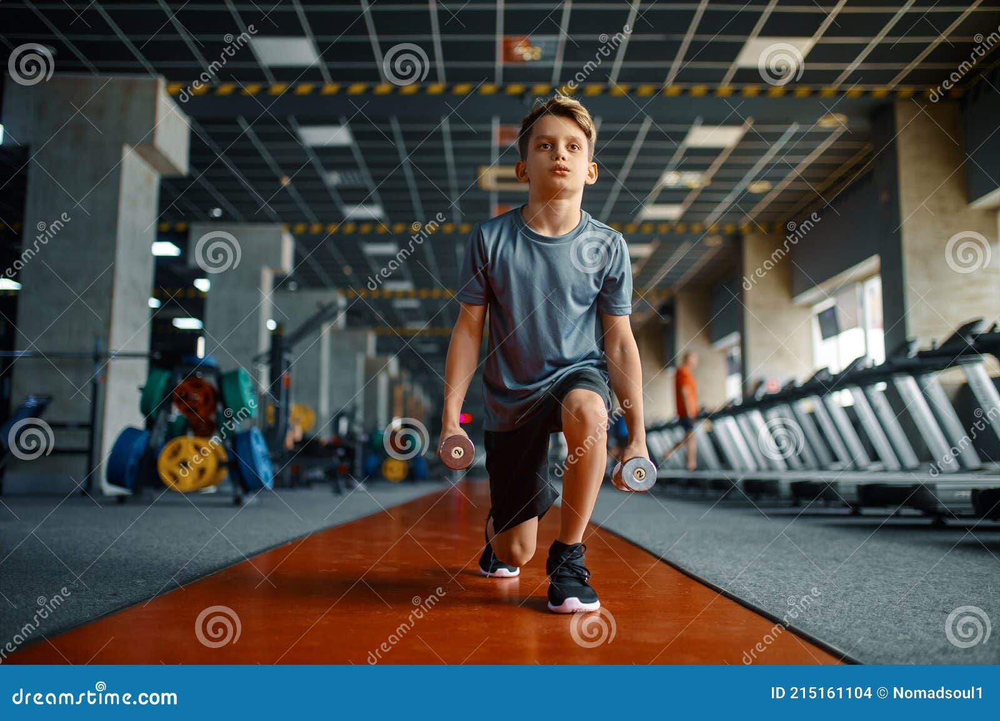
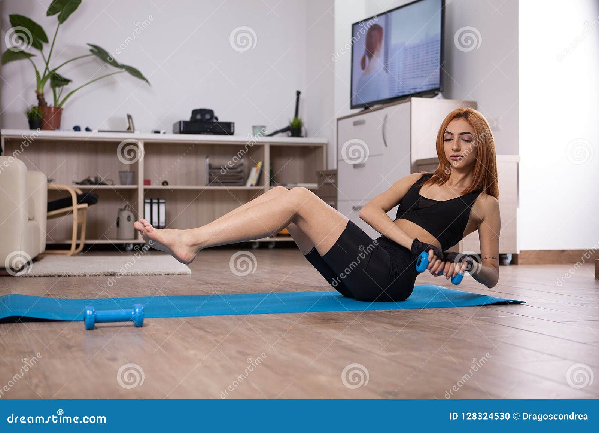

Featured Workout
Try our 30-minute HIIT workout to boost your energy!
Motivational Story 1: John's Transformation
John struggled with his weight for years. After committing to a regular workout routine and healthy eating habits, he lost **40 pounds** and gained confidence. John now runs marathons and inspires others with his story!
Motivational Story 2: Sarah's Journey
Sarah was always shy about her body. With the help of a fitness coach, she learned to embrace her strength. Through **consistent workouts** and a positive mindset, she transformed not just her body, but her outlook on life. Sarah is now a fitness enthusiast and encourages others to find their path to wellness!